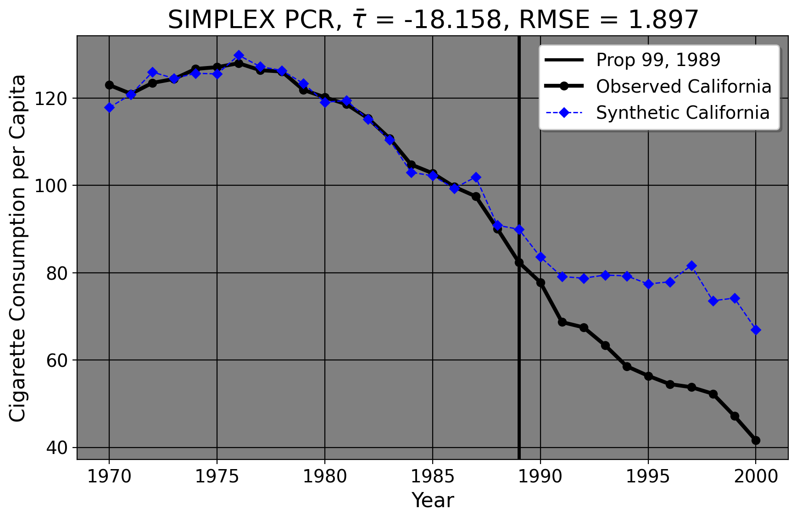

2 Data and Policy Studies
2.1 What is This Thing Called Science?
Science at its core is a process we use to understand observable phenonmena. It is based on using logic and observations of the senses to form coherent understandings about the world. Data, or a collection of observations, is fundamental to being able to conduct scientific research. We use data in our daily lives to draw conclusions. Note here that data is not a living, breathing concept: it requires construction and interpretation by us. We use principles of science to analyze data. As we learn in middle and high school, science typically begins with asking questions or defining a problem.
Suppose our current problem involves commute time to school or work, and we don’t wish to walk. In this case, that is our question: “What’s the ideal way to get to school/work?” We then gather information. Chances are we may use Google Maps or Waze to guide us. In this context, these tools provide us with the information we need, namely, estimates of how long our commute will be. And, assuming we wish to get to our destination as fast as possible, we make inferences or conclusions about the ideal way to take based on the GPS’ options. If GPS says the highway takes 15 minutes but the backstreets which avoid highways take 35 minutes, we will typically elect to use the highway since that takes us to our destination the quickest.
There’s still two more steps to do, though: test our hypothesis (derived from the GPS) and draw conclusions about the actual observed facts. This means that we must, in real life, leave home and take one way to school. When we get to our destination, we form conclusions about how actually taking the highway went. Of course, we repeat this idea multiple times to get a better sense of which say is best; eventually, we take a certain direction to work or school precisely because we have the expectation the highway will, on average, be preferable to alternative ways. This is a simple example, yet it illustrates the central point: in scientific inquiry, we ask questions, draw on existing information at our disposal, act upon that information, and draw conclusions or plan accordingly based on testing the validity of that observed information. We don’t call this science in daily life, but that’s exactly what it is. The steps I’ve outlined so far are present in every field from public policy to physics, albeit with a little more sophisitcation.
In quantitative public policy analysis, data is central to all that we do. The simple reason for this using data allows us to try to resolve disagreements. While it is certainly true that people may conduct different data analyses based on different assumptions and obtain different results/conclusions, the main idea is that we all agree that we can look into the real world as a metric for decisionmaking. In particular, we build constructs that map on to metrics we care about. After all, everyone can have opinions or views on things, but the useful part is testing out our expectations against reality. That way, we can have a better sense of what’s more likely to be true if a certain policy happens/is passed.
Traditionally, data analysis in the policy space has two goals in mind. The first is descriptive analysis of a phenomenon or topic. In this setting, we simply use raw or lightly transformed data to visualize relationships between variables. For example, suppose we wish to visualize the trends of the U.S. GDP before and after the Berlin wall fell, beginning in 1960 to 2003.
clear *
u "http://fmwww.bc.edu/repec/bocode/s/scul_Reunification.dta", clear
loc int_time = 1990
qui xtset
local lbl: value label `r(panelvar)'
loc unit ="USA":`lbl'
cls
levelsof code, loc(units)
loc a: word count `units'
forval i=1/`a'{
local lcolors " `lcolors' plot`i'opts(lcol(gs10))"
}
xtline gdp, overlay ///
`lcolors' ///
addplot((connected gdp year if code ==`unit', ///
connect(L) lcolor(black) mcol(none) lwidth(thick))) ///
legend(off) ///
yti("GDP per Capita") ///
tline(`int_time')We can use the above script to load into Stata a dataset that speaks to this phenomenon. I’ll explain what I did step by step. I first open Stata on my computer. Then, I type in doedit into the command line terminal for Stata, opening what’s called a do-file, or a text file that Stata uses to execute script. I clear everything from the terminal’s memory by using clear *. I then store the year of the Berlin Wall’s collapse into what’s called a local macro, 1990 in this case. A macro is simply something that takes the place of another number or letter. The data here are sorted by country code and year – here, code is a numeric variable that has words indexed to each number (in this case, the USA is unit 1). I then use the levelsof command to get an ordere list of all values for code (again here, each country is indexed to a particular number), storing this list in the macro units. I wish to highlight the United States in particular. Therefore, I count the length of the macro units, storing it in its own macro called a. Now, I make the plot. I use what’ called a loop to build a macro of line colors (a light grey in this case), where we have one grey per number of nations aside from the United States. Then, using xtline, I build the plot. We can see that the GDP per capita of the United States consistently trended upwards from 1960 to the early 2000s. This has no meaning by itself; however, imagine this were enemployment rates in a local community, and we detected a spike in one particular unit. Descriptive analysis tells us that a problem exists, and we may use line graphs or other graphics to visualize this. By the way, this is an example of what we call panel data, where many units are observed over more than one point in time.
A second goal of policy analysis is estimating the impact of some policy or intervention on some outcomes, or perhaps some measure of association. Association is quite simple. Say we wish to visualize the relationship between cigarette prices and sales in the year 1980. We can do this with a scatterplot. We can load in a dataset that speaks to this and make a plot.
clear *
import delim "https://raw.githubusercontent.com/OscarEngelbrektson/SyntheticControlMethods/master/examples/datasets/smoking_data.csv", clear
keep if year ==1980
replace retprice = retprice/100
cls
scatter cigsale retprice, ///
ti("Scatterplot: Cigarette Packs Sold per Capita versus Price") ///
xti(Price) yti(Sales)Here we create a cross sectional dataset (or, where we observe many units at one point in time, 1980 in this case). We can then make a scatterplot between the price of cigarettes in each state and the amount of packs sold in each state. We can see, as we’d expect, that sales tend to decrease with an increase in price.
What about impacrt estimation? We can use the same dataset we just imported to do this too. In 1989 California wished to reduce tobacco smoking by its implementation of Proposition 99. This intervention raises an immediate question for policy analysis: namely, “what was the effect of this intervention on the actual smoking rates we see?” Of course, we may collect more comprehensive tobacco sales data on this matter. After data collection (or even prior, in this case), we can form hypotheses. A hyopothesis is an interrogative, testable statement about the world. It is like a hypothetical in the sense that we try to imagine the effect of a policy (or relationship between variables). Here, we can hypothesize that Proposition 99 has a negative impact on tobacco smoking. Negative here is not intended in the normative sense; presumably most people reading this do not smoke (tobacco, anyways) or think that smoking is wonrg or immoral. Instead, here “negative” means that the policy might decrease the tobacco sales per capita compared to what they would have been otherwise. To test this, we can use statistical analysis to compare California to other states that didn’t do the policy.
The plot shows the cigarette pack sales per 100,000 for California from the years 1970 to 2000 (our dependent variable). The thick black line denotes the observed values for California, and the vertical black reference line shows the year that Proposition 99 (the independent variable/treatment) was passed. In our case, we wish to produce an estimate of California’s cigarette consumption in the years following 1989 had Proposition 99 never been passed. This line is denoted by the blue dashed line. After we do our analyses/estimations, we can discuss what the implications are. In other words, was the policy effective by some appreciable margin? Are there other outcomes concerns to consider? We can see at least from the plot I present here that it seems like Prop. 99 decreased California’s tobacco sales compared to what they would have been otherwise.
2.2 4 Steps of Data Analysis
Broadly speaking, we can think of data analysis being broken into 5 distinct concepts. I summarize them below.
2.2.1 Identifying Policy Problems
As we’ve discussed above, the first step in this process is simply asking questions. What kind of questions? Policy questions. Knowing what specific questions to ask though can be tricky. Policy is a giant field. Of the thousands of questions we could ask, how do we know which ones will be the most pressing or timely? In other words, how do we know that this is a problem that policy needs to be enacted for? How can we identify programs whose analysis benefits the citizenry or other interested parties? Put simpler, who cares? Why do we want to do this study or answer this question? Who stands to benefit?
2.2.2 Gathering Data
Even once we’ve identified the problem, how do we go about gathering real data to answer questions? If we can’t get data that speaks to the issues that we’re concerned about, we can’t obtain answers that are useful.
2.2.3 Cleansing Data
In real life, datasets do not come to us wrapped in a pretty bow ready for use. Cleaning data (or organizing it) can be a very messy affair in the best of times. In order for us to answer our questions, the data we obtain must be organized in a coherent way such that we can answer questions at all. If you wish to plot the trend lines of maternal mortality in Romania compaed to 15 other nations and your data are not sorted by nation and time, trust me, the plot you’ll get will not just look terrible, but you can’t glean any trends or patterns from it. What’s worse, you may not even know improper sorting is the casue of the problem until you bother to look at your dataset again. So, it is best to have good habits developed early.
2.2.4 Analyzing Data
For analysis, we apply statistical analysis in order to answer the questions we’re asking, using the dataset we’ve now cleaned. Such techniques can range from simply descriptive statistical analysis to complex regression models. From such models, we sometimes wish to make inferences to a bigger population, but sometimes more specific statistics (e.g., the average treatment effect on the treated units) are of interest.
2.2.5 Presenting the Results
Now that we’ve done analysis, we can finally interpret what the findings mean. We attempt to draw conclusions based on our results and come up with avenues for future research or other relevant aspects of interest. In this section, we typically try and say why our findings are relevant.
2.3 Identifying Policy Problems
2.3.1 Justifications For Policy
Before we can do any analysis though, we have to take a step back. We have to ask ourselves how we know a problem exists in the first place. There are two broad justifications that policy is based on: negative externalities and social good, but the main point of both justifucations is “harm”.
2.3.2 Externalities
The idea of externalities comes from microeconomic theory, which says that efficient markets will affect only those parties who willingly participate in transactions. Particularly in the case of negative extrnalities, or externalities which harm others, we could use public policy to rectify this.
Consider a very simple example: seatbelts. In physics, any force that is not stopped by an equal, oppostite force will keep going. So, if you’re in a car crash while driving at 60 miles per hour while unbuckled, the car stops. You, however, don’t stop: you keep going, 60 miles per hour through the windshield. No public policy is needed just yet. So far, any cost that comes from a transaction has been borne by you, the driver. By the way, I’m not kidding: one of the arguments against seatbelts was literally that using seatbelts should be a personal decision if it does not put others at risk. Additionally, industry also argued against mandatory seatbelt laws on the grounds that it was the government interfering between the transactions of a consumer and the seller.
However, there are a few issues with the externality argument. Firstly, being unbuckled turns you into a human projectile. You can hit your passengers or even others outside your vehicle if you’re unbuckled. Your market exchange (you buying the car and driving it) is now potentially having second-order effects on others by you not using a seatbelt. So, the government may wish to mandate seatbelts while driving in order to prevent these negative externalities which come in the form of medical bills or death. To address the argument of indsutry above, that seatbelt laws would raise costs of production, this raises an important moral dilemma: does the harm caused to the business of having to install seatbelts matter more than the human harm caused by a society where seatbelts are optional? Also, we are human beings. We have imperfect knowledge. We know for fact that we don’t have all the answers, to paraphrase Socrates. We also don’t know if the actions we do will ultimately hurt someone else. We live in a probabalistic world (which we will return to later). Indeed, we could argue against laws banning DUI in precisely this manner, saying that we don’t know if the intoxicated driver will harm someone until they do. But, as with seatbelts, we never know if there will be another passenger on the road or a child playing in the street. So, we rarely know if we’re actually putting peoples’ lives in danger by driving drunk or unbuckled. We can’t know if an externality will occur until it does, usually. Thus, the next view (social good) adopts a different form of reasoning.
2.3.4 Why Is Tobacco a Problem?
As we’ve discussed above, harm or necessity is typically a standard we look to in order to determine if policy is needed. As I’ve mentioned, California passed Proposition 99 in 1989 to reduce smoking rates. But, how did we know there was a problem to begin with? To do this, we can grab data on lung cancer morality rates from 1950 until today. Presumably, of course, we view lung cancer as harmful and somehthing we wish to prevent.
The shaded area represents the period before any state-wide anti-tobacco legislation was passed in the United States. We can see quite clearly the age-standarized lung cancer mortality rates rose in a fairly linear manner in the United States. However, the curve is parabolic; mortality rates were rising every single year until the zenith in 1990. Mortality began to fall when the first large scale anti-tobacco laws were passed. Of course, the degree to which these laws were the cause of this decrease is an empirical question (especially since lung cancer develops over time, the decrease after 1990 suggests other thing may have also contributed to the decline in behaviors that led to the decreease in mortality). However, given the clear increase in lung cancer rates and other obvious harms of tobacco smoking in the preceding decades, policymakers in California and the voters, in fact, became increasingly hostile to tobacco smoking in public and in other crowded areas. So, California passed legislation in 1988 (as did at least a dozen other states from 1988 to 2000) to decrease smoking rates.
Had I not plotted this trend line, people (from the tobacco industry in 1970, for example) could simply say “Well, nobody knows if lung cancer mortality is a problem. How do we know if there’s a problem here? I don’t think one exists.” This plot makes a powerful case that lung cancer is indeed a problem which must be addressed due to the persistent rise in mortality. Data in other words provides intellectual self-defense; if you posit that a problem exists, then this should be demonstrable using datasets that speak to the issue at hand. As a consequence of this, if a problem does exist (be it tobacco smoking or the impact of racial incarceration/arrest disparities), we can then look for policies that attempt to mitigate or solve the problem. That way, we can go about doing analysis to see which policies are the most effective.
3 Summary
At this point, it’s clear that data and data analysis are critical to public policy. It allows us to visualize trends, identify the effects of interventions, and reach conclusions on the basis of this evidence. However, the “how” we reach conclusions part matters, since the methodology we use to reach conclusions fundamentally affects what we can conclude in the very first place. The next two lectures cover probability and asymptotic theory; these form the foundations of quantitative public policy analysis.
2.3.3 Social Good
Moreover, the externality justification isn’t typically the way we think about things from a public policy perspective. Usually, we have social welfare goals in mind. This can come in the form of harm reduction or prevention measures. When we argue for public education, for example, we typically don’t do so because we think that the private schools won’t educate citizens enough (even though they won’t), and that public school will be to decrease inefficient education markets. In fact, we typically don’t think of education (in our formative years anyways) as a market at all. We usually argue for public education because we think that education has inherent benefits, and that being denied a certain level of education necessitates an inherent harm. Imagine for a moment how the literacy rate of the United States would look if school was completely optional. We likely would not complain about GDP loss, we’d likely complain about a society where lots of people can’t read the cereal box or function within society in a decent manner. In other words, society has a vested interest in keeping people safe, educated, and healthy to some degree. So we mandate seatbelt laws, basic schooling, and other laws/regulations in service of these ends. Importantly, “these ends” does not have a right or wrong answer. The goals of policy are ultimately decided by people within the society. However, knowing the goals of a policy and reasons for its existence helps us ask meaningful questions about it. Following the above discussion, a natural research question that follows is “How did seatbelt laws affect the rate of car accident injuries and deaths?”